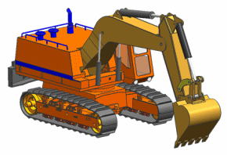

A model of a welded structure has the following characteristics:
The plates have a constant thickness, but thickness varies between components.
The plates are welded together and reinforced with gussets and ribs.
The weld geometry may or may not be represented.
The analysis model is based on a CAD assembly that is composed of many plates represented as solid bodies. You can create midsurfaces for these components.
The plates are modeled with thin shell elements.
